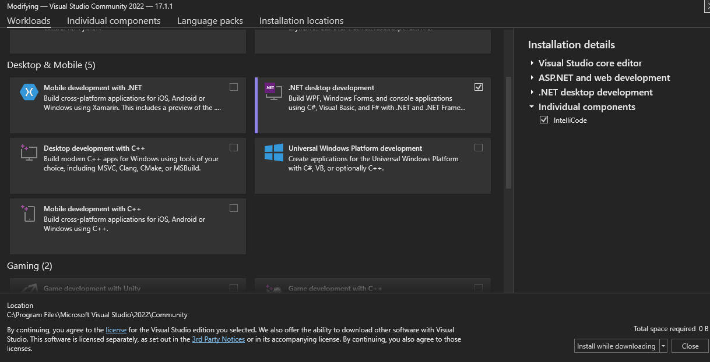

C++ Guide
Author: Teun Engels
This is a basic guide for C++.
What is C++
C++ is a GPL developed by Bjarne Stroustrup
C++ has lots of features
- object-oriented programming
- generic programming
- functional programming
- low-level memory manipulation
Setup
Installing
First of all we need a way to program C++.
We have a few options but we will show the 2 most popular ones
-
VS22
-
Linux (Can also be VM or WSL)
VS22
The first option is Visual Studio (in this case Visual Studio Code 22).
-
Here we need to go to Tools -> Get Tools & Features...
-
Then a new menu will open

-
Here we need to select
desktop development with C++ -
For the rest you just need to follow the installer
Linux
The second option is linux.
Note
g++ is the name of the C++ compiler
For this we need to use the terminal Press Ctrl + Alt + T
Commands
To install g++ you need to run this command
sudo apt-get update
sudo apt-get install gcc
sudo apt -get install g++
sudo apt-get install build-essential
To check your g++ version you can run
Later in this guide we will use a debugger GDB but we can install it already
To check your GDB version you can run
File Types
.cpp
For C++ code we use a .cpp file so the compiler knows we are using C++.
main.cpp is the source code filename typically used for the main() function of a C++ program, where the program begins execution.
#include <iostream>
using namespace std;
int main()
{
cout<<std::endl<<"Hello World";
// C++ returns 0 by default so there is no need to do it yourself (optional).
}
.h & .hpp
If you are at all familiar with C you probably know header files.
C++ is an extend of C so C++ also uses header files. These can either have a .h extention or .hpp.
A header file includes the following three things
- Function definitions
- Data type definitions
- Macros
There are two types of header files
- Pre-existing header files: Files which are already available.
- User-defined header files: These files are defined by the user.
Code Example
Here is an example of a basic header file implementation
main.cpp
sum.cpp
sum.h
C++ Project Structure
Top-Level Directories:
A lot of these Top-Level directories are not needed at the start so we shall ignore them for the beginning. But a few are important so we will take a futher look into them.
build is reserved for builds. So its special in that it must not be committed to a Source Control System.
src Source is very important here you will place your .cpp files.
Note
Header File Placement
Separate Placement
Combined Placement